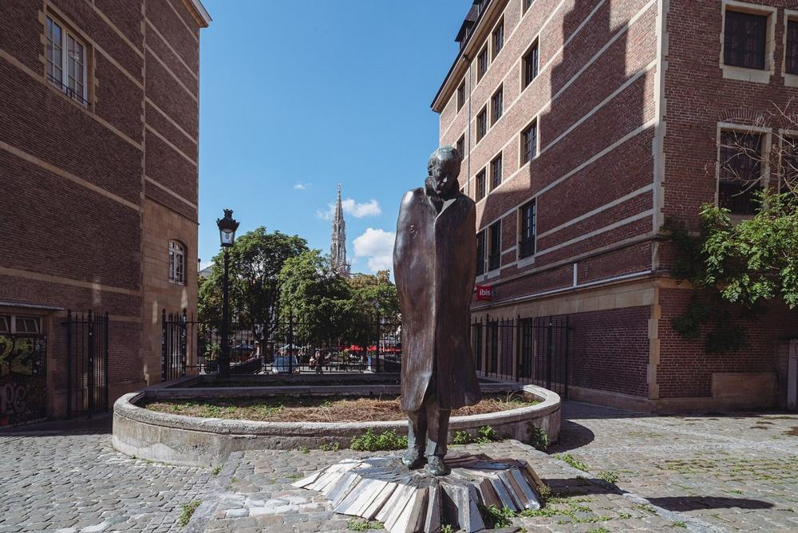

故事
聽他的鋼琴，最好先不要找旋律。他是 Cecil Taylor，1929 年生在紐約。他六歲學鋼琴，後來進了波士頓的音樂學院。
除了爵士，他也聽 Bartók、Stockhausen 這些現代作曲家。1956 年，他發了第一張專輯 Jazz Advance。他彈琴像在打鼓，手掌和前臂都會壓在琴鍵上。

很多人聽不懂，他還是照自己的方法彈了六十多年。2013 年，他拿到日本的京都賞。下次聽自由爵士，先聽聲音的力氣和速度，不要急著找歌。
故事後面
Cecil Taylor 受過完整的音樂學院訓練，也聽 Bartók、Stockhausen 這些現代作曲家。
他彈琴像在打鼓，常用手掌和前臂壓下一整片琴鍵，被視為自由爵士的代表人物。
很多人一開始聽不懂，他還是照自己的方法彈了六十多年，二〇一三年拿到京都賞。
這樣聽
先不要找旋律，聽聲音的力氣、速度和密度怎麼變化。
逐句英文
When you listen to his piano, it's best not to look for a melody at first.
He was Cecil Taylor, born in New York in 1929.
He started piano at six and later attended a conservatory in Boston.
Besides jazz, he listened to modern composers like Bartók and Stockhausen.
In 1956 he released his first album, Jazz Advance.
He played the piano like a drum, pressing whole palms and forearms onto the keys.
Many found it baffling, but he kept to his own way for more than sixty years.
In 2013 he received Japan's Kyoto Prize.
Next time you hear free jazz, listen first for force and speed, not for a tune.
查證筆記與出處
「波士頓的音樂學院」是新英格蘭音樂院。「前臂壓琴鍵」是常見描述。「六十多年」是我依出道與過世年份估的，請核對。
https://en.wikipedia.org/wiki/Cecil_Taylor
https://en.wikipedia.org/wiki/Kyoto_Prize
一分鐘影片版在 Instagram @jazz101tw。